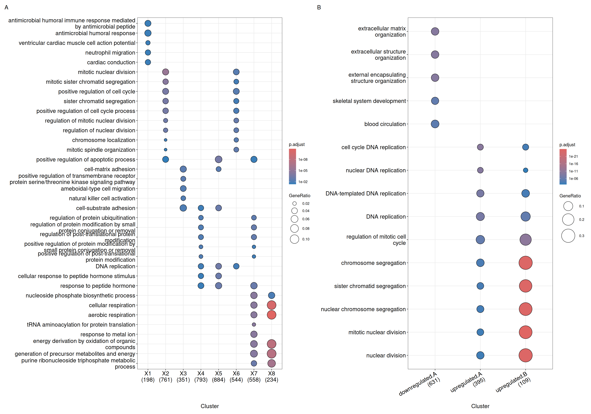

The clusterProfiler package was developed for biological theme comparison (Yu et al. 2012; Wu et al. 2021), and it provides a function, compareCluster, to automatically calculate enriched functional profiles of each gene clusters and aggregate the results into a single object. Comparing functional profiles can reveal functional consensus and differences among different experiments and helps in identifying differential functional modules in omics datasets.
13.1 Comparing multiple gene lists
The compareCluster() function applies selected function (via the fun parameter) to perform enrichment analysis for each gene list.
As an alternative to using named list, the compareCluster() function also supports passing a formula to describe more complicated experimental designs (e.g., \(Gene \sim time + treatment\)).
13.3 Functional analysis of single-cell marker genes
The compareCluster() function is highly versatile and can be directly integrated into single-cell analysis workflows. For example, after identifying marker genes for each cluster using Seurat, the results can be directly used for functional enrichment analysis.
13.3.1 Using Seurat results
Typically, FindAllMarkers() from Seurat returns a data frame where rows are genes and columns include cluster information and statistical metrics.
library(Seurat)library(SeuratData)library(dplyr)library(clusterProfiler)# Load example datadata("pbmc3k")sce <- pbmc3k.final# Identify marker genessce.markers <-FindAllMarkers(object = sce, only.pos =TRUE, min.pct =0.25, thresh.use =0.25)# Filter markersmarkers <- sce.markers |>group_by(cluster) |>filter(p_val_adj <0.001) |>ungroup()# ID conversion (if needed)gid <-bitr(unique(markers$gene), 'SYMBOL', 'ENTREZID', OrgDb ='org.Hs.eg.db')markers <-full_join(markers, gid, by =c('gene'='SYMBOL'))# Perform comparison using formula interfacex <-compareCluster(ENTREZID ~ cluster, data = markers, fun ='enrichKEGG')# Visualizationdotplot(x, label_format =40) +theme(axis.text.x =element_text(angle =45, hjust =1))
13.3.2 Using COSG results
Methods like COSG return marker genes as a list or data frame where columns represent clusters. Since a data frame is essentially a list of equal-length vectors, it can be passed directly to compareCluster().
library(COSG)# Identify markers using COSGmarker_cosg <-cosg( sce,groups ='all',assay ='RNA',slot ='data',mu =1,n_genes_user =100)# The first element is a data frame of gene symbols# Columns correspond to clustershead(marker_cosg[[1]])# Directly use the data frame for enrichmenty <-compareCluster(marker_cosg[[1]], fun ='enrichGO', OrgDb ='org.Hs.eg.db', keyType ='SYMBOL', ont ="MF")# Visualizationdotplot(y, label_format =60) +theme(axis.text.x =element_text(angle =45, hjust =1))
This demonstrates that compareCluster() can seamlessly handle various data structures commonly produced by single-cell analysis tools, simplifying the downstream functional interpretation.
13.4 Visualization of functional profile comparison
13.4.1 Dot plot
We can visualize the result using the dotplot() method.
dotplot(ck)dotplot(formula_res)

Figure 13.1: Comparing enrichment results of multiple gene lists. (A) Using a named list of gene clusters, the results were displayed as multiple columns with each one represents an enrichment result of a gene cluster. (B) Using formula interface, the columns represent gene clusters defined by the formula.
The formula interface allows more complicated gene cluster definition. In Figure 13.1(B), the gene clusters were defined by two variables (i.e. group that divides genes into upregulated and downregulated and othergroup that divides the genes into two categories of A and B.). The dotplot() function allows us to use one variable to divide the result into different facet and plot the result with other variables in each facet panel (Figure 13.2).
Figure 13.2: Comparing enrichment results of multiple gene lists defined by multiple variable. The results were visualized as a dot plot with an x-axis representing one level of conditions (the group variable) and a facet panel indicating another level of conditions (the othergroup variable).
By default, only the top 5 (most significant) categories of each cluster are shown. Users can change showCategory to specify how many categories should be displayed for each cluster, and if showCategory is set to NULL, the whole result will be plotted. The showCategory parameter also accepts a character vector of selected categories to plot pathways of interest.
dotplot() tries to make the comparison among different clusters more informative and reasonable. After extracting, for example, 10 categories for each cluster, clusterProfiler collects overlap of these categories among clusters. For example, term A may be enriched in all gene clusters (e.g., g1 and g2) and ranked among the 10 most significant categories of g1 but not of g2. In this case, clusterProfiler will still include term A in the g2 cluster to make the comparison more reasonable.
This feature ensures that if a term is significant and selected for one cluster, its statistics in other clusters are also displayed, allowing for a valid comparison. Consequently, the number of categories shown for some clusters might exceed the showCategory limit (e.g., 15 categories shown for g2 while showCategory is 10). Disabling this by setting includeAll = FALSE in dotplot() may result in a plot that suggests zero overlap between clusters, which can be misleading (see Figure 13.3 A vs B) and is not recommended.
The same selection logic is used by cnetplot() for compareCluster() results. In both functions, a numeric showCategory selects the top terms within each cluster by default, while includeAll controls whether matched terms from other clusters should be retained for comparison.
Figure 13.3: Comparison of dotplot with and without includeAll parameter. (A) includeAll=FALSE produces a plot that strictly follows showCategory but may hide overlapping terms. (B) The default behavior (includeAll=TRUE) recovers the missing overlap information, making the comparison more reasonable.
The dotplot() function accepts a parameter size for setting the scale of dot sizes. The default parameter size is set to geneRatio, which corresponds to the GeneRatio column of the output. If it is set to count, the comparison will be based on gene counts, while if set to rowPercentage, the dot sizes will be normalized by count/(sum of each row). Users can also map the dot size to other variables or derived variables (see Chapter 16).
To provide the full information, we also provide number of identified genes in each category (numbers in parentheses) when by is set to rowPercentage and number of gene clusters in each cluster label (numbers in parentheses) when by is set to geneRatio, as shown in Figure 13.1.
The p-values indicate which categories are more likely to have biological meanings. The dots in the plot are color-coded based on their corresponding adjusted p-values. Color gradient ranging from red to blue corresponds to the order of increasing adjusted p-values. That is, red indicates low p-values (high enrichment), and blue indicates high p-values (low enrichment). Adjusted p-values were filtered out by the threshold given by the parameter pvalueCutoff, and FDR can be estimated by qvalue.
13.4.2 Gene-Concept Network
The cnetplot also works with compareCluster() result. For compareClusterResult objects, enriched terms are drawn as pies so that the composition of each term across gene clusters can be displayed directly in the network. Like dotplot(), a numeric showCategory selects the top enriched terms within each cluster by default, and includeAll = TRUE keeps comparable terms from other clusters in the plot.
Figure 13.4: cnetplot() for comparing functional profiles of multiple gene clusters. Default per-cluster selection (A), includeAll = FALSE (B), categorySizeBy = ~ -log10(p.adjust) (C), and custom pie colors (D).
Compared with ordinary enrichment results, there are several useful parameters to keep in mind for compareCluster() output:
showCategory = 3 means that the top 3 enriched terms are selected within each cluster by default.
showCategory can also be a character vector if you want to display a manually selected set of terms.
includeAll = TRUE keeps comparable terms that also appear in other clusters; set includeAll = FALSE if you only want the directly selected terms.
categorySizeBy controls the size of category pies and supports expressions such as ~itemNum, ~p.adjust, or ~ -log10(p.adjust).
Pie colors are mapped to Cluster, so custom cluster colors can be supplied with ggplot2::scale_fill_manual().
As in dotplot(), the split parameter can be used when term selection should be carried out within another grouping variable rather than only by cluster. For example, when GO enrichment is performed with ont = "ALL", users can select the top terms within each ontology:
In (Yu et al. 2012), we analyzed the publicly available expression dataset of breast tumor tissues from 200 patients (GSE11121, Gene Expression Omnibus) (Schmidt et al. 2008). We identified 8 gene clusters from differentially expressed genes, and used the compareCluster() function to compare these gene clusters by their enriched biological process. In (Wu et al. 2021), we analyzed the GSE8057 dataset which contains expression data from ovarian cancer cells at multiple time points and under two treatment conditions. Eight groups of DEG lists were analyzed simultaneously using compareCluster() with WikiPathways. The result indicates that the two drugs have distinct effects at the beginning but consistent effects in the later stages (Fig. 4 of (Wu et al. 2021)).
References
Schmidt, Marcus, Daniel B?hm, Christian von T?rne, et al. 2008. “The Humoral Immune System Has a Key Prognostic Impact in Node-Negative Breast Cancer.”Cancer Research 68 (13): 5405–13. https://doi.org/10.1158/0008-5472.CAN-07-5206.
Wu, Tianzhi, Erqiang Hu, Shuangbin Xu, et al. 2021. “clusterProfiler 4.0: A Universal Enrichment Tool for Interpreting Omics Data.”The Innovation 2 (3): 100141. https://doi.org/10.1016/j.xinn.2021.100141.
Yu, Guangchuang, Le-Gen Wang, Yanyan Han, and Qing-Yu He. 2012. “clusterProfiler: An r Package for Comparing Biological Themes Among Gene Clusters.”OMICS: A Journal of Integrative Biology 16 (5): 284–87. https://doi.org/10.1089/omi.2011.0118.